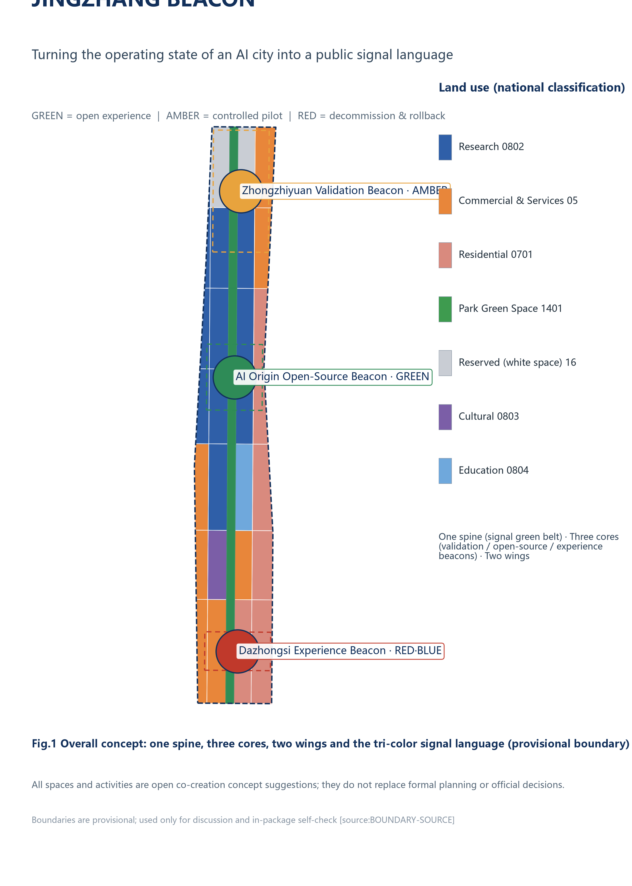
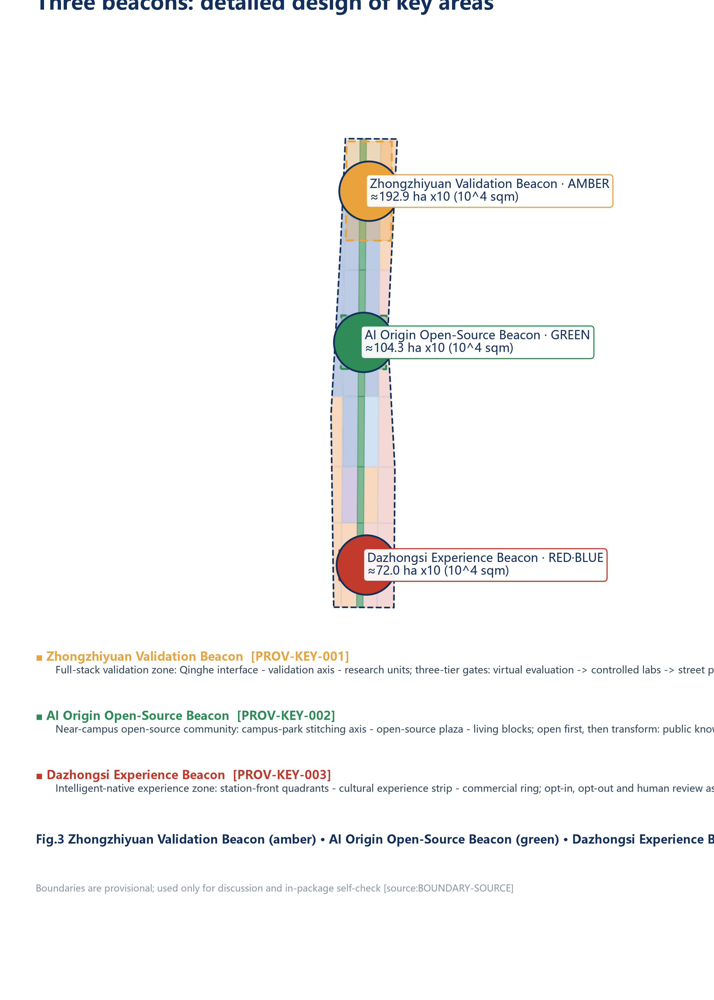
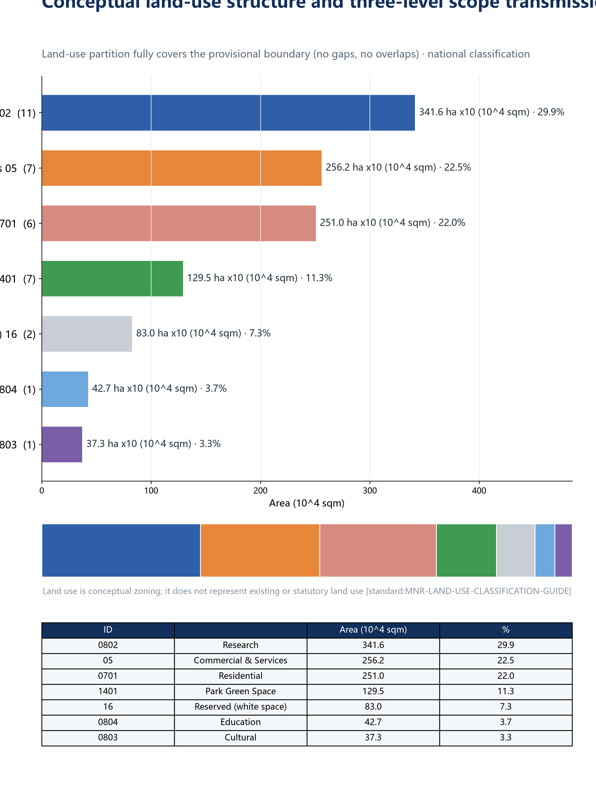
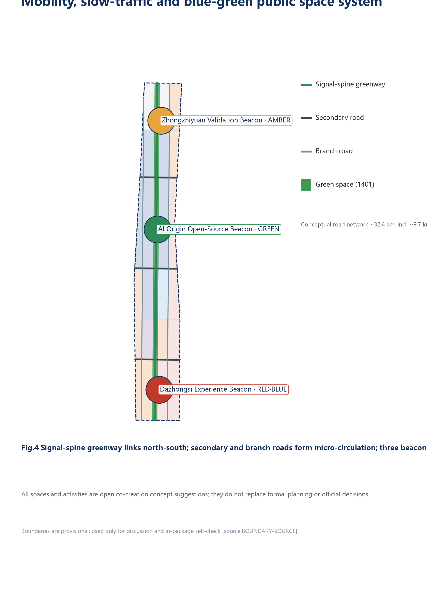
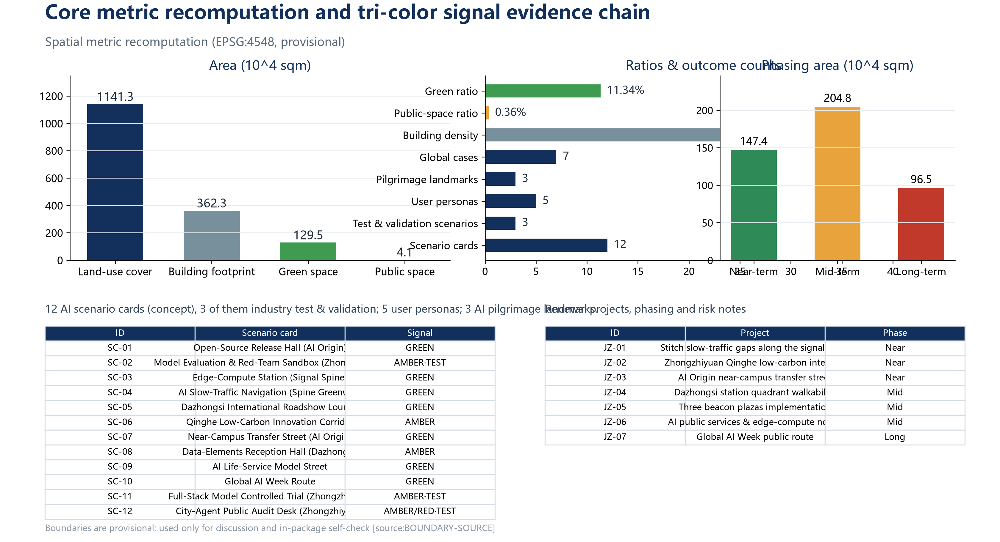

Taking the signalling system of the century-old Jing-Zhang Railway as its prototype, this proposal turns the operating state of an AI city into a tri-colour public signal language: experienceable, verifiable and reversible. A one-spine, three-core, two-wing spatial structure makes the three key areas validation, open-source and experience beacons. All spaces and activities are open co-creation concept suggestions; they do not replace formal planning or official decisions.


AI industry ecosystem and future-city research: a signal chain of source - validation - open source - experience - governance, organising the three-areas-two-wings loop and a global AI event system.
Industry ecosystemFuture city
Industrial space, urban renewal, transport and character mapped: 35 land-use units fully cover the provisional boundary; the signal-spine green belt links north-south; buildings, roads, green space and phasing layers co-express the design.
Land useBuildingsRenewal projects
Three key areas at detailed-design depth: positioning, spatial moves, AI scenarios and implementation dependencies; in-package recomputed areas approx. 192.9 / 104.3 / 72.0 ha.
Key areasAI scenarios
Full-stack validation zone (~192.9 ha): Qinghe interface - validation axis - research units. Three-tier gates: virtual evaluation -> controlled labs -> street pilots; every pilot has a term, evaluation, human review and exit channel.
Model evaluation & red-team sandboxFull-stack controlled trialCity-agent public audit desk
Campus-adjacent open-source community (~104.3 ha): campus-park stitching axis - open-source plaza - living blocks. Open first, then transform: public knowledge enters the public commons and returns to the community under licence.
Open-source release hallNear-campus transfer streetPublic code wall
Intelligent-native experience zone (~72.0 ha): station-front quadrants - cultural experience strip - commercial ring. Every experience is bounded by "selectable and exitable": basic services remain available without AI.
International roadshow loungeData-elements reception hallAI life-service model street
| ID | Scenario card | Signal |
|---|---|---|
| SC-01 | Open-Source Release Hall (AI Origin) | Green |
| SC-02 | Model Evaluation & Red-Team Sandbox (Zhongzhiyuan) | Amber · Test |
| SC-03 | Edge-Compute Station (Signal Spine) | Green |
| SC-04 | AI Slow-Traffic Navigation (Spine Greenway) | Green |
| SC-05 | Dazhongsi International Roadshow Lounge | Green |
| SC-06 | Qinghe Low-Carbon Innovation Corridor | Amber |
| SC-07 | Near-Campus Transfer Street (AI Origin) | Green |
| SC-08 | Data-Elements Reception Hall (Dazhongsi) | Amber |
| SC-09 | AI Life-Service Model Street | Green |
| SC-10 | Global AI Week Route | Green |
| SC-11 | Full-Stack Model Controlled Trial (Zhongzhiyuan) | Amber · Test |
| SC-12 | City-Agent Public Audit Desk (Zhongzhiyuan) | Amber/Red · Test |
| Persona | Spatial response |
|---|---|
| Open-source developers | Origin open-source plaza, public code wall, night collaboration space |
| Startups & research teams | Zhongzhiyuan shared test yard, edge-compute service points, validation gates |
| Leading firms & international visitors | Station-front composite interface, beacon plazas, roadshow lounge |
| Nearby residents | Signal-spine slow-traffic loop, embedded community services, graded events |
| University faculty & students | Campus-park stitching, transfer street, AI education experience points |



Buildings follow "time-limited pilot - annual evaluation - expand or retire", mapped to the tri-colour signal: green services open directly and accept appeals; amber pilots state terms and human review; red pilots are evaluated at expiry, rectified or retired — devices removable, data rollable back.
107 conceptual footprint units (approx. 3.623 million sqm, density ~0.32) validate spatial capacity and industrial-space supply only; no parcel-level retain/renovate/demolish conclusions. FAR, height and other statutory indicators lack official regulatory conditions and stay unknown.
PASSBOUNDARY_TRUST — provisional boundary labelled, not used as official redline
PASSKEY_AREAS_TRUST — three key areas provisional, disclosed
PASSLAND_USE_TOPOLOGY — land use fully covers, no overlaps, no gaps
PASSVISUAL_STATIC — this page is offline static HTML, no remote resources
PASSPROFESSIONAL_EVIDENCE — standards, depth, geometry, metrics, sources, assumptions all cited